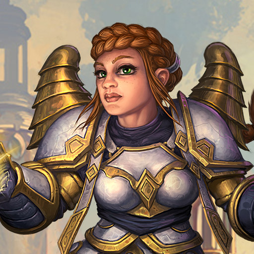

Blizzard, célèbre studio de développement qu'on ne présente plus
aujourd'hui dénombre parmis ses nombreuses productions trois series
phare. Nous allons donc revenir sur chacune d'elles et tâcher de
vous partager notre attrait pour ce studio de production.
World of warcraft
World of Warcraft ce déroule dans le monde d'Azeroth. L'histoire
ce passe quatre années après les évènements de Warcraft III : The
Frozen Throne. Le joueur choisit son personnage d'abord parmi deux
factions, l'Alliance ou la Horde, puis parmi les races de chaque
faction. Après avoir choisit la faction, puis la race de son
choix, le joueur peu personnaliser son apparence et choisir une
classe parmi les 11 disponibles, Guerrier, Mage, Voleur, Prêtre,
Chasseur, Druide, Démoniste, Paladin, Chaman, Moine, et une classe
héroïque Chevalier de la Mort. Toutes les classes ne sont pas
disponible pour toutes les races. Ainsi par exemple les Orcs ne
peuvent pas être Paladin ou Druide.
Le jeu est un RPG (Jeu de Rôle) massivement multijoueurs, il n'y a
pas de possibilité de jouer seul. Wow reprend le concept des RPG,
vous devez effectuer des quêtes et tuer des ennemis pour faire
évoluer votre personnage. Comme c'est un MMORPG vous avez la
possibilité de rejoindre une guilde composée d'autres joueurs.
Vous pouvez faire les quêtes seul ou à plusieurs. Vous avez la
possibilité d'affronter les joueurs de la faction adverse en champ
de bataille ou dans le monde d'Azeroth. Le joueur peu aussi
affronter d'autres joueurs de sa faction en arène. Si vous
préférer jouer contre l'environnement (PVE) vous avez la
possibilité de rejoindre un groupe pour participer à un donjon ou
à un raid.
Présentation des classes
Chevalier en armure de plaques étincelante ou lanceur de sorts en
robe aux couleurs bigarrées ? Le choix est vaste dans World of
Warcraft ! Chaque classe pose un défi différent et répond à des
mécaniques de jeu spécifiques. Quelle est votre vocation ?
Guerrier
Les guerriers s’équipent avec précaution pour le combat, et
n’hésitent pas à engager le combat la tête la première tel
un éclair vêtu d’une armure lourde. Leurs tactiques de
combat sont variées et ils peuvent brandir plusieurs types
d’armes pour protéger leurs alliés moins versés dans le
combat.
Paladin
Les paladins affrontent leurs ennemis de face, confiants en
leur armure lourde et en leurs sorts de soin pour survivre
aux assauts les plus meurtriers. Qu’ils brandissent un
bouclier massif ou une arme à deux mains démesurée, les
paladins parviennent à éloigner griffes et armes de leurs
alliés.
Chasseur
Les chasseurs combattent leurs ennemis à bonne distance,
ordonnant à leurs fidèles familiers d’attaquer tandis qu’ils
font pleuvoir les flèches ou les balles, ou empoignent leurs
armes d’hast. Si leurs attaques à distance sont
dévastatrices à longue comme à courte portée, les chasseurs
sont aussi extrêmement mobiles.
Voleur
Les voleurs prennent souvent la précaution de se dissimuler
dans l’ombre pour engager un combat et porter leurs coups
pernicieux au corps-à-corps. Si l’affrontement s’éternise,
leurs attaques affaiblissent leur adversaire jusqu’à lui
porter le coup de grâce.

Prêtre
Les prêtres sont investis d’une puissante magie qu’ils
utilisent pour soutenir et soigner leurs alliés. Ils peuvent
également frapper amèrement leurs ennemis à distance par des
sorts offensifs, mais ils sont fragiles et ne portent que
des vêtements en guise d’armure ; c’est pourquoi ils doivent
faire attention à ne pas se laisser submerger par leurs
adversaires.
Chaman
Pendant les combats, les chamans disposent des totems pour
infliger des dégâts ou maîtriser la zone afin d’optimiser
leur efficacité tout en entravant leurs ennemis. Ils sont
suffisamment polyvalents pour se jeter dans la mêlée et
porter de cruels coups à leur cibles.
Mage
Les mages anéantissent leurs ennemis par leurs incantations
arcaniques. S’ils manient des sorts offensifs d’une
puissance indicible, ils n’en sont pas moins fragiles avec
leurs armures légères, ce qui les laisse particulièrement
vulnérables au combat en corps-à-corps.
Démoniste
Les démonistes réduisent en cendres leurs ennemis déjà
affaiblis par les malédictions et afflictions infligées par
leur magie noire. Ne portant pas d’armure protectrice, ces
lanceurs de sorts peuvent bénéficier d’améliorations
magiques offertes par leurs démons qui détournent
l’attention de leurs ennemis.
Moine
Quel que soit leur rôle au combat, les moines comptent
surtout sur leurs mains et leurs pieds pour mener la danse,
et sur un lien fort avec leur chi pour nourrir leurs
pouvoirs. Ils peuvent également soigner leurs alliés tout en
continuant d’infliger des dégâts.
Druide
Les druides peuvent envisager le combat sous de nombreux
angles : ils peuvent en effet remplir tous les rôles
(soigneurs, tanks et spécialistes des dégâts) mais doivent
bien garder à l’esprit les exigences de chacun d’entre eux.
Ainsi, il est capital qu’ils choisissent la forme adaptée
aux situations rencontrées, car chacune de ces formes a une
finalité bien particulière.
Chasseur de démons
Méprisant les armures lourdes, les chasseurs de démons
préfèrent se fier à la rapidité avec laquelle ils fondent
sur leurs ennemis pour les mutiler à l’aide d’armes à une
main. Toutefois, les Illidari doivent aussi user de leur
agilité à des fins défensives pour s’assurer que l’issue de
la bataille leur soit favorable.
Chevalier de la mort
Les chevaliers de la mort provoquent leurs ennemis dans un
combat au corps à corps, en ajoutant la magie noire aux
coups de leur arme pour le rendre plus vulnérable ou le
blesser par leur puissance impie. Ils entraînent leur cible
dans un duel sans merci, la forçant à se concentrer sur lui
loin de ses plus faibles compagnons.
Starcraft II
StarCraft 2: Wings of Liberty est un jeu vidéo
de stratégie en temps réel (STR) développé par Blizzard
Entertainment. La première partie du jeu est publiée le 27 juillet
2010 sur PC et Macintosh et fait suite à StarCraft et à son
extension StarCraft: Brood War publiés en 19981. StarCraft 2 est
divisé en trois parties, le jeu de base sous-titré Wings of
Liberty étant complété par deux extensions appelées Heart of the
Swarm et Legacy of the Void4. Le jeu prend place au xxvie siècle
et relate les affrontements entre trois espèces distinctes pour la
domination d’une zone de la voie lactée connue sous le nom de
Secteur Koprulu : les Terrans, constitués de descendants de
bagnards terriens exilés loin de leur monde natal, les Zergs, une
race de créatures modifiées génétiquement et obsédées par
l’assimilation des autres espèces de la galaxie, et les Protoss,
une race d’humanoïdes qui dispose de technologies et de pouvoirs
psioniques très avancés. L’histoire de StarCraft 2: Wings of
Liberty se déroule quatre ans après les événements de StarCraft:
Brood War. Elle se concentre sur la lutte d’un groupe de rebelles
Terrans mené par Jim Raynor qui combat un régime autoritaire, le
Dominion. Les deux extensions Heart of the Swarm et Legacy of the
Void se concentrent respectivement sur l’histoire des Zergs puis
sur celle des Protoss. StarCraft 2 connaît rapidement un important
succès commercial avec plus de 3 millions de copies vendues un
mois après sa sortie. En décembre 2010, Blizzard Entertainment
annonce avoir vendu 4,5 millions de copies depuis la sortie du
jeu, Starcraft II est devenu gratuit à partir de novembre 2017.
La race Terran est celle de la campagne de Wings
of Liberty, c'est-à-dire le jeu originel. StarCraft II est un jeu
très inspiré de l'univers de Warhammer 40K et l'influence des
Space Marines semble avoir été décisive dans les choix de design
de la race. Les deux races sont des humains dont les armures hors
norme augmentent les capacités, et qui luttent contre tout ce qui
n'est pas dans leur camp, humain ou non. Dans l'univers de
Starcraft, les Terrans sont les descendants de prisonniers envoyés
purger leur peine en exil, au sein du secteur de Koprulu.
L'histoire de la campagne de StarCraft I et II montre les combats
et les trahisons autour d'un certain nombre de Terran, Jim Raynor,
Arcturus Mengsk, Nova, et Sarah Kerrigan. Vous pourrez retrouver
de plus grandes parts de l'histoire Terran ici et là ainsi que
dans le guide de la campagne de Wings of Liberty.
Les Zergs sont l'archétype de l'extra-terrestre
méchant. En conséquence, ils ne ressemblent pas vraiment à E.T.,
mais plutôt au personnage éponyme du film Alien. Inutile de vous
faire une photo on peut résumer l'aspect visuel de la race en
disant acide, dents, griffes et monstrueux. Les Zergs sont
également inspirés de l'univers de Warhammer 40K et de la race
Tyrranide. La ressemblance est très impressionnante sur le plan
visuel, mais aussi dans la mesure où les créatures les plus
puissantes de la race contrôlent les autres au moyen de pouvoirs
psychiques. Cette domination est encore plus aboutie chez les
Zergs où une créature contrôle toutes les autres. Dans Starcraft
I, c'est le Maître-Esprit qui est l'expression de la conscience
collective des Zergs. Après avoir été tué par le sacrifice du
Protoss Tassadar, il est remplacé par l'humaine qu'il avait
transformé en Zerg, Kerrigan. Celle-ci sera le personnage
principal de la campagne de l'extension de Starcraft II - Heart of
the Swarm.
Les Protoss sont la race sœur des Zergs. Une
fratrie ennemie créée par une race plus ancienne et puissante, les
Xel'Naga. Il s'agit d'une race très ancienne et aux technologies
et pouvoirs psychiques très avancés. Pour refaire un parallèle
avec Warhammer 40K il s'agirait de la race Eldar. On pourrait
également comparer cette race aux martiens dans La guerre des
mondes. Les Protoss pilotent en effet de très grosses unités
tirant des rayons lasers dévastateurs. Les Protoss sont également
quelque peu inspirés de faits historiques puisque une de leurs
unités de base est le Zélote, dont le nom vient d'une secte
fanatique juive. Dans la campagne de Starcraft I, se trouvent
également citées Antioch ou Scion. La race Protoss est partagée en
deux groupes : Hauts Templiers et Templier Noirs. Ceux-ci ont
suivi des voies divergentes, mais finissent par s'allier afin de
sauvegarder leur espèce. Avec le sacrifice de nombre de membres
des Hauts Templiers, c'est Zeratul, un des plus importants
Templier Noir qui est le protagoniste principal de la race Protoss
dans Starcraft II.
Diablo III
Vingt ans se sont écoulés depuis les évènements cataclysmiques de
Diablo® II. Méphisto, Diablo et Baal ont été vaincus, mais la
Pierre-Monde qui protégeait autrefois le monde de Sanctuaire des
forces des Hauts cieux et des Enfers ardents a été détruite, et le
Mal s'éveille à nouveau à Tristram... Diablo III est conçu pour devenir le jeu de rôle
d'action de référence, et constitue une véritable suite de la
série Diablo. Les joueurs choisissent un héros appartenant à l'une
des cinq classes distinctes, disposant chacun de toute une gamme
de sortilèges et de compétences. Les héros partent ensuite à
l'aventure, explorant des lieux riches et variés et découvrant peu
à un peu une saga épique, en combattant des hordes de monstres et
de « boss » redoutables. Ils gagnent progressivement de
l'expérience et des compétences, et s'emparent d'objets d'une
puissance incroyable. L'histoire se déroule sur Sanctuaire, un
monde sombre et fantastique. À l'insu de la plupart de ses
habitants, Sanctuaire a été sauvé des forces démoniaques il y a
une vingtaine d'années par quelques braves et courageux héros. La
plupart des combattants qui ont affronté directement les armées
des Enfers, et qui ont eu la chance de survivre, ont perdu la
raison. Et la plupart des autres ont enfoui leurs souvenirs hantés
et chassé ces horreurs de leur esprit. Dans Diablo III, les
joueurs reviennent sur Sanctuaire pour affronter une nouvelle fois
le Mal sous ses nombreuses formes. Diablo III sera dans la lignée
de Diablo II, avec une interface simple d'utilisation, une action
rythmée et rapide, et le gameplay viscéral que les joueurs de
Diablo connaissent et apprécient. Il comprendra aussi de toutes
nouvelles fonctionnalités qui permettront d'atteindre une toute
nouvelle dimension dans le jeu de rôle d'action Diablo.
Un choix de cinq puissantes classes de personnages. Un tout
nouveau moteur graphique 3D avec des effets visuels spectaculaires
et un moteur physique Havok. De nombreuses zones en intérieur et
en extérieur détaillant de nouvelles régions du monde de
Sanctuaire. Des environnements interactifs avec de dangereux
pièges et obstacles, ainsi que des éléments qui peuvent être
détruits. Des mondes générés aléatoirement sous-tendus par des
évènements scénarisés pour un style de jeu dynamique et
inépuisable. Un vaste assortiment de monstres diaboliques, avec
des comportements et des schémas d'attaque uniques. Un nouveau
système de quêtes et de nouvelles options de personnalisation des
personnages pour offrir l'expérience ultime en matière de jeu de
rôle et d'action. Une fonctionnalité multijoueur sur Battle.net
incluant des modes de jeu coopératifs et compétitifs.